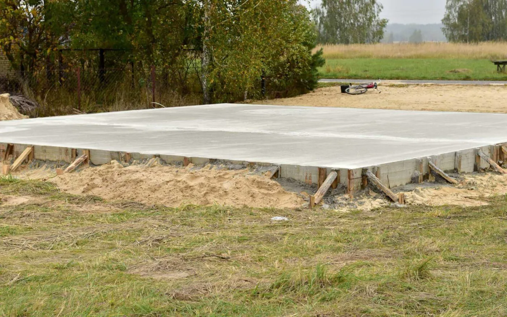
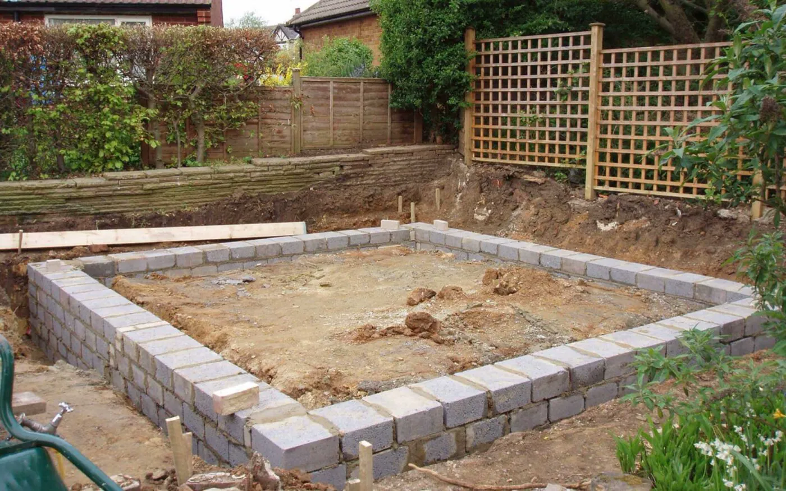
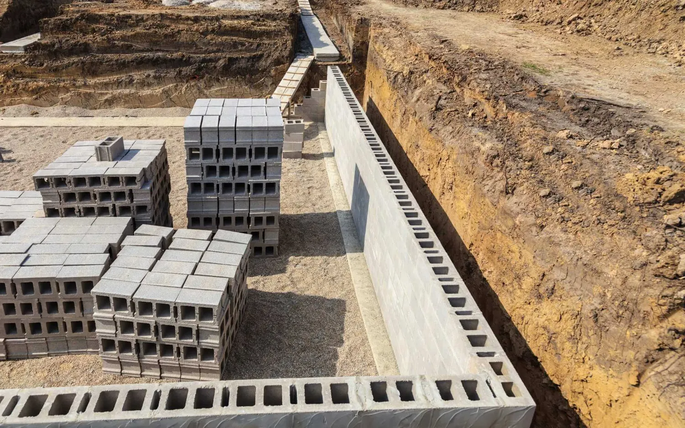
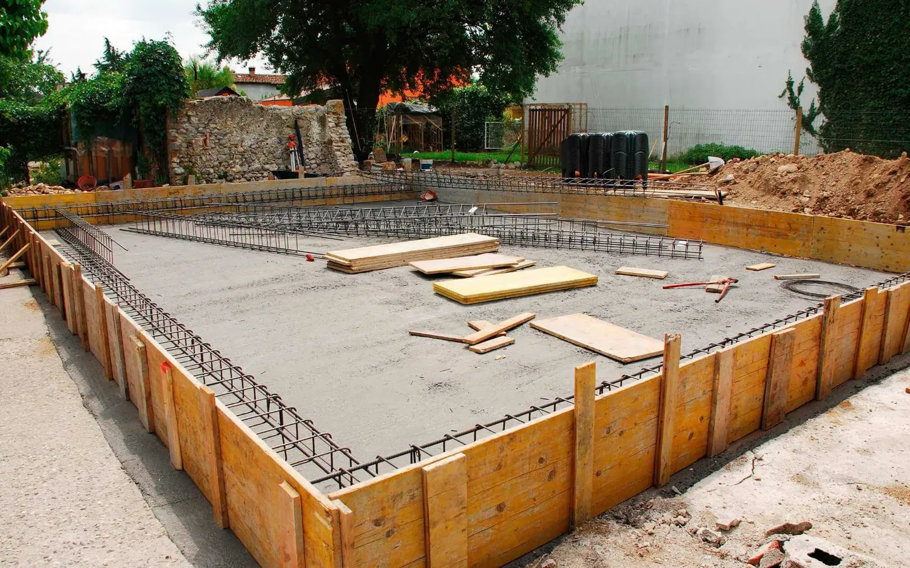
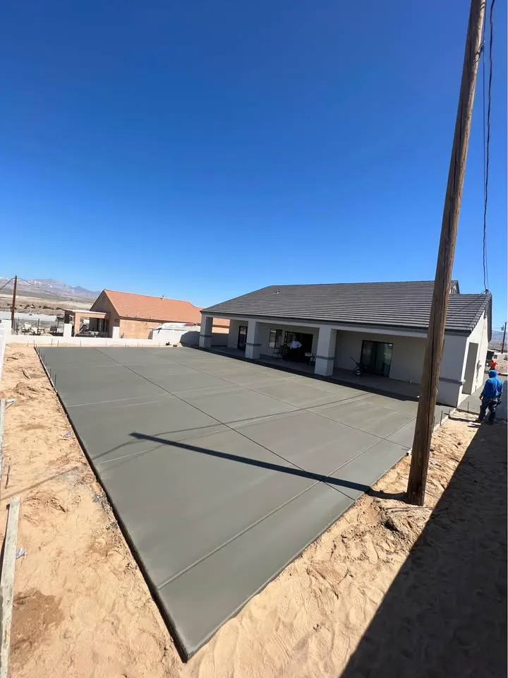

Concrete slab and foundation contractor in Glendale, AZ
Everything built on a slab depends on it being flat and strong. West Valley Concrete pours house and garage footers and foundations, stem wall foundations, commercial foundations and footers, and slabs for sheds, pole barns and garages in Glendale and Phoenix's West Valley.

- Licensed, insured and bonded
- Free written estimates
- 5.0 stars from 37 reviews
What's included.
Foundations cannot be adjusted after they cure, so the work that counts happens before the pour: land prep, footers and forms. Soil characteristics, drainage and load all drive the design, and your plans or engineer decide the details. Foundations are typically inspected by the city.
- House footers and foundations
- Garage footers and foundations
- Stem wall foundations
- Commercial foundations and footers
- Concrete slab pouring for a pole barn, garden shed, new garage or new house build
How we do it.
-
Review the job
We look at the site and your plans and talk through load, soil and drainage.
-
Prepare and form
Prepare the land, set footers and forms to line and level.
-
Pour and finish
Place the concrete and finish the slab or foundation.
-
Cure
Let it cure before anything is built on it.
When to call us.
If any of these sound familiar, the sooner someone looks at it the cheaper it usually is to fix.
- You are building a house, garage, shed or pole barn
- You need a commercial foundation or footer
- A slab needs to go in for equipment or storage
- You want a price per square foot for planning
Recent work.




Slabs and foundations questions.
Do you do commercial foundations?
Yes. We pour commercial foundations and footers as well as residential.
What is a stem wall foundation?
A load-bearing wall that raises the structure off the ground and helps keep a home stable on varying soil.
What can you pour a slab for?
A pole barn, garden shed, new garage or a new house build.
Can I get a price per square foot?
Contact us and we will talk it through. A free in-person quote covers your specific site.
Ready to pour a base that lasts?
Call us, or send the details and we will call you to set up a free in-person quote.